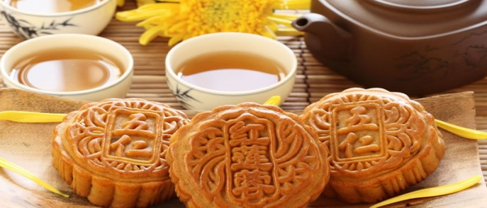
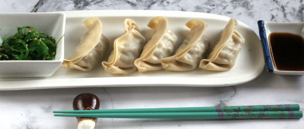
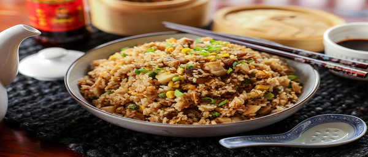

Nuestras mejores recetas:

original: recetas de china
Exquisito postre típico de la "Fiesta del Medio Otoño" de China.
Es una torta que varía sus rellenos de acuerdo a las
tradiciones de cada región. En esta oportunidad te presentamos
el pastel de luna con un relleno a base de pasta de semilla de loto,
vino y yemas de huevo. Es un postre que vale la pena preparar y
acompañar con una rica infusión.

original: Villa María
Esta receta es tan popular que se ha extendido a otras
partes del mundo, donde se prepara de forma similar
y se le dan otras denominaciones como gyozas,
dim sums, etc. En realidad es la misma receta, adaptada
a los gustos de cada país. También se puede encontrar
con otros rellenos como marisco, jiaozi de verduras y
brotes de soja, etc.
en función de los gustos.

original: iRecetasFaciles
El Chao fan es uno de los platos más
populares de China y es considerado
comida callejera, ya que lo puedes encontrar
en todas las ciudades y restaurantes.
Es un plato extremadamente barato sobre todo
si lo comes en un restaurante local pequeño,
en algún hutong (barrios residenciales de calles
estrechas del norte de China, sobre todo Beijing).
Chao fan, además de ser barato, es un plato que
siempre va a ser simple, rico y todos los chinos
saben prepararlo. Es el plato que nosotros
comimos casi todos los días que estuvimos
en China, el único que sabíamos pronunciar
bien en mandarín y el que sabíamos que
no nunca nos iba a defraudar.